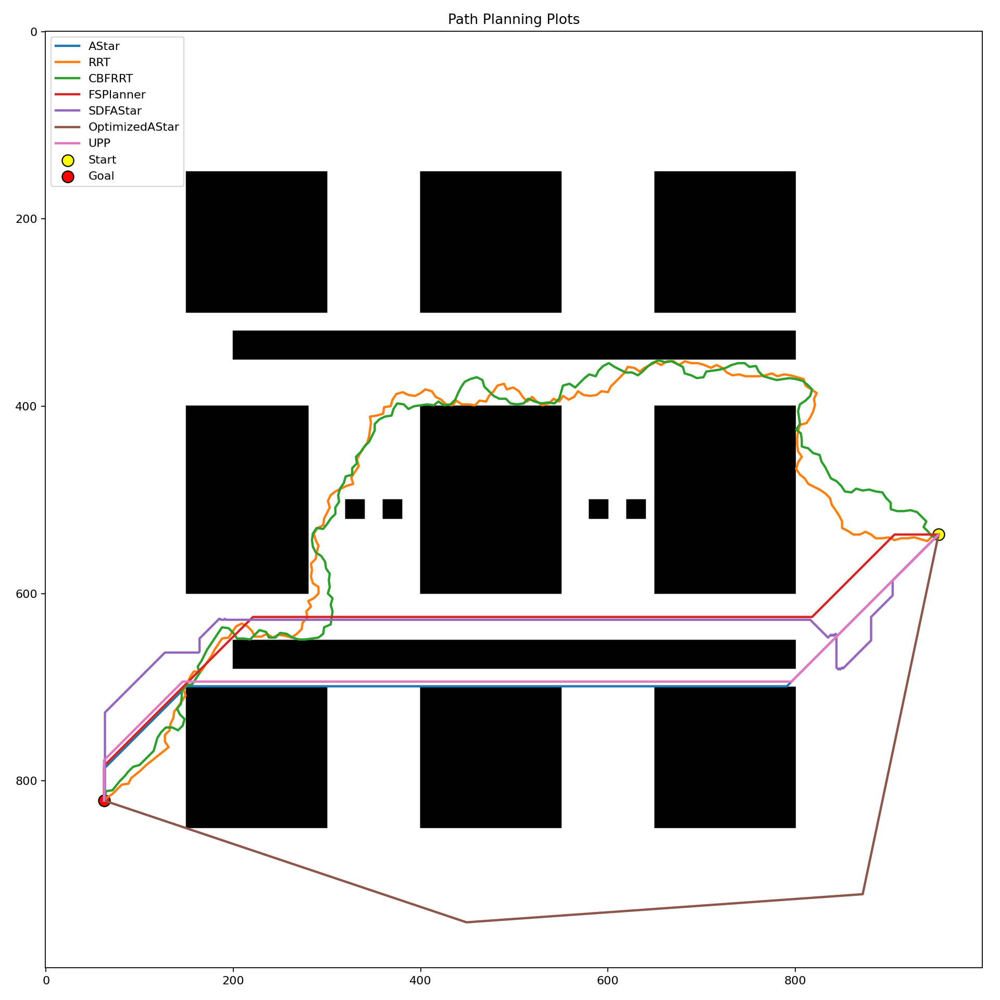
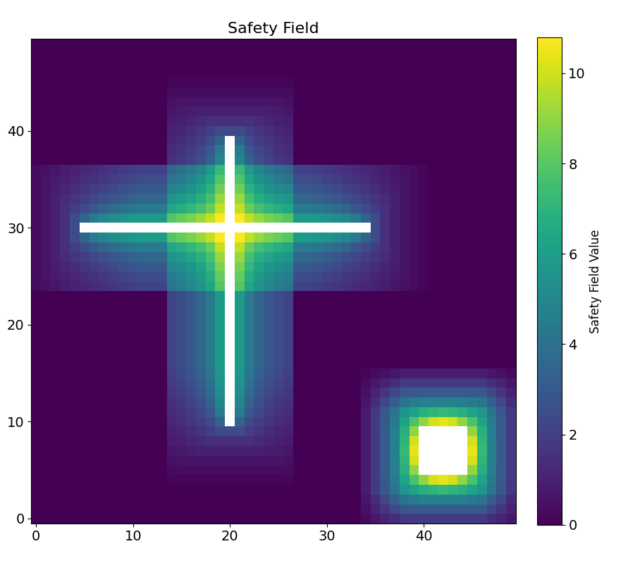
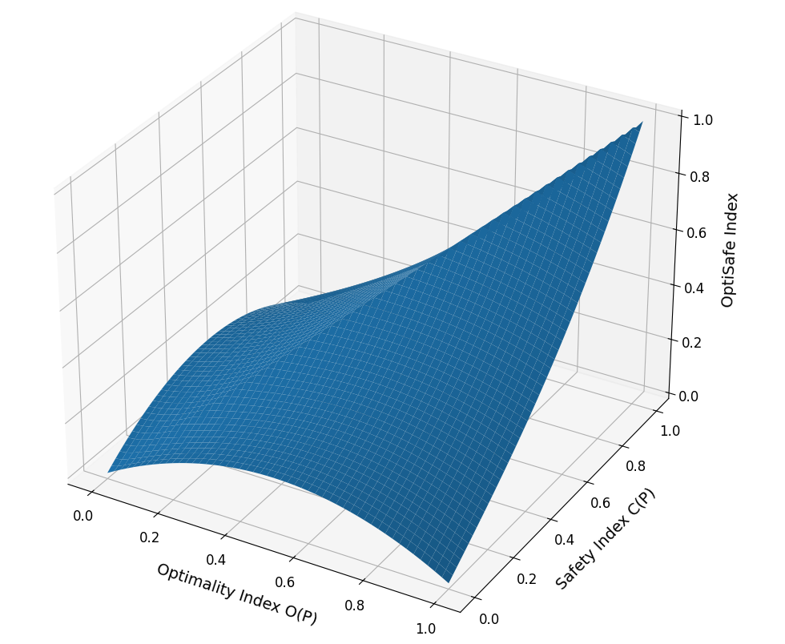
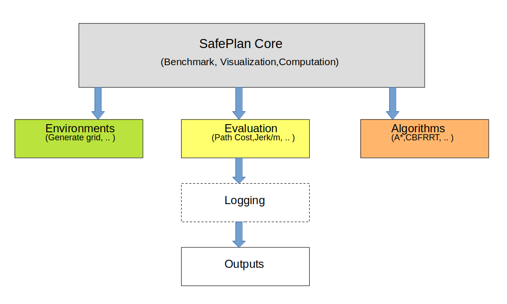
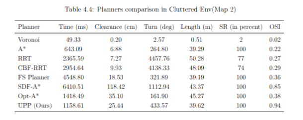
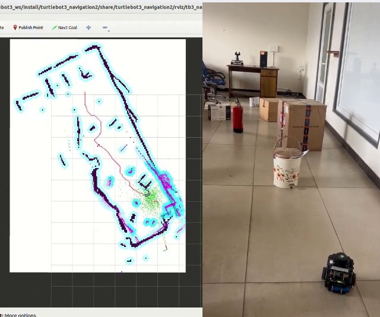

A unified framework for balancing safety and optimality in robotic path planning using an adaptive planner, a unified evaluation metric, and a reproducible benchmarking suite.
Author: Jatin Kumar Arora
Advisor: Prof. Shubhendu Bhasin
Department: Electrical Engineering, IIT Delhi
Simulation and TurtleBot experiments demonstrating safety-aware navigation.
Simulation and TurtleBot experiments demonstrating safety-aware navigation.
Autonomous robots must navigate safely around obstacles while still reaching their goals efficiently. Existing path planners often optimize either path length or obstacle clearance, but not both together. This thesis proposes a unified framework for safe and optimal robotic navigation.
The work introduces the Unified Path Planner (UPP), a graph-search planner that uses an adaptive heuristic combining geometric distance and obstacle-proximity safety. It also proposes the OptiSafe Index, a normalized metric that jointly evaluates safety and optimality, and SafePlan, a benchmarking framework for evaluating classical and safety-aware planners.

Classical planners such as A* often generate short paths but may pass close to obstacles. Safety-aware planners improve clearance but may become overly conservative, longer, or slower.
The central challenge is to design navigation methods that are both safe and efficient.
A safety-aware graph-search planner using adaptive heuristic weighting and an inverse-distance safety field.
A normalized metric that jointly captures optimality, clearance, balance, and overall performance strength.
A modular benchmarking suite for reproducible evaluation of classical and safety-aware planners.
UPP uses a heuristic that combines Manhattan distance, Chebyshev distance, and a local safety field:
Unlike fixed-weight planners, UPP adapts α and β online based on search progress and turning behavior.

Existing evaluations usually report path length and clearance separately. The OptiSafe Index combines both into one score by rewarding planners that are both safe and near-optimal.
Penalizes planners that are strong in only one dimension, such as very safe but very long paths.
Rewards planners that achieve high safety and high optimality simultaneously.

SafePlan is a modular benchmarking framework for evaluating path planners across robotics-relevant metrics such as path length, obstacle clearance, planning time, turning angle, success rate, and OptiSafe score.

UPP was evaluated against classical and safety-aware planners including A*, RRT, CBF-RRT, Voronoi, SDF-A*, Optimized A*, and FSPlanner.
UPP maintains path length close to A* while improving obstacle clearance.
UPP achieves high OptiSafe performance and remains robust in obstacle-dense environments.

UPP produces paths close to the shortest path while preserving safety margins.
UPP avoids unsafe near-obstacle paths commonly produced by shortest-path planners and give high safety margins with respect to safety aware planners.
The proposed method achieves strong balance between safety and optimality.
The proposed planner was validated on a TurtleBot platform using ROS2 Humble, LiDAR-based mapping, Nav2 integration, and DWA local planning.

Balancing Safety and Optimality in Robot Path Planning: Algorithm and Metric.
Jatin Kumar Arora, Soutrik Bandyopadhyay, Sunil Sulania, Shubhendu Bhasin.
International Journal of Intelligent Robotics and Applications, under review.